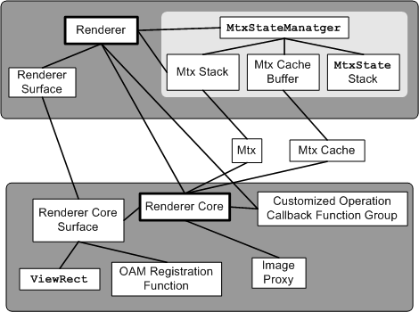

- Cell viewing processing that corresponds to the render target - cell affine conversion (double affine) - cell flip processing - adjustment of the image reference position offset that matches the image data the cell references - cell VRAM transfer state object processing In addition, the user must execute the following processes when using the renderer core module. - matrix stack management - affine parameter load processing - rewriting of parameters in OAM attributes - visible culling
The differences from the renderer module are listed below. - does not manage the matrix stack - does not support multiple surfaces - does not hide the rendering method from users (2D or 3D)
None.
2004/12/06 Initial version.
CONFIDENTIAL